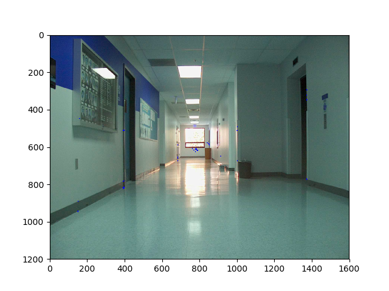

The code for assignment4 is below.
Assignment4the first source image's '0' degree angle with significant lines and points
the first source image's '90' degree angle with significant lines and points

the second source image's '0' degree angle with significant lines and points

the second source image's '90' degree angle with significant lines and points

the randomly calculated angles are 30 and 45 and you see no resluts due to thresholding

the second part source images are

the third source image is same as second part
Hough lines on them are
Probabilistic Hough lines on them are
the fourth part vanishing points for hough lines images are
the fourth part vanishing points for hough lines images and and our FindLines() are almost similar but we get extra points also
the fourth part vanishing points for our FindLines lines images are. They are not perfect but you can see the vanishing point in the middle, in between the other points